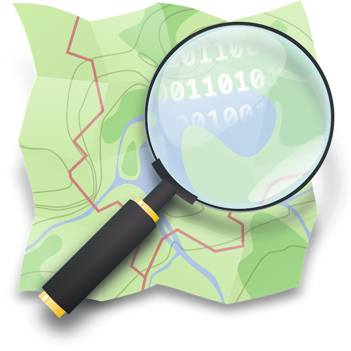

Using Open Geospatial Data in GIS
1 Why Open Geospatial Data?
In the world of data, open means different things. First, it’s about who can access and use the data. Second, it’s about how that data can be used - from the transparency of its creation and handling to the standards and protocols that make the data accessible.
Thanks to advances in computing and the internet, many organizations now embrace open data policies to share, access, and create value from data.
Having an open data policy offers several key benefits:
Greater transparency, especially for governments. When data is open, citizens can see and understand what their government is doing.
Increased public participation. Open data allows citizens to engage with and contribute to solutions for their communities.
Faster and more significant advances in knowledge. Instead of spending time and money generating new data, researchers can build on existing information.
Better reproducibility of research results. Other scientists can verify and build upon previous work.
Improved informed decision-making, particularly for global-scale problems. When decision-makers have access to good data, they make better choices.
Open geospatial data is especially crucial for tackling global challenges like climate change, urban development, and disaster response. In these situations, quick access to accurate location-based information can make the difference in coordinating effective responses and making smart decisions.
2 Sources reviewed in this tutorial
In this guide, we’ll explore ways to access and use open geospatial data, focusing on OpenStreetMap and Overture Maps for Geographic Information Systems (QGIS specifically). These tools are powerful resources that anyone can use to work with location-based data.
2.1 OpenStreetMap OSM

OpenStreetMap (OSM) is a collaborative world map that anyone can edit and use - think of it like “Wikipedia for maps.” It is created by volunteers worldwide who add and update geographic information about roads, buildings, parks, businesses, and other features. People contribute data based on their local knowledge, GPS tracks, aerial imagery, and field surveys.
Key aspects of OSM:
Community-driven: The data is collected and maintained by a global community of mappers, from hobbyists to professional geographers.
Truly open: Unlike commercial maps, OSM data is freely available for anyone to download, use, and modify under an open license (Open Database License).
Used everywhere: The data powers thousands of applications and services - from humanitarian crisis response to navigation apps, urban planning tools, and games.
Constantly updated: Because anyone can contribute, OSM often has more up-to-date information than commercial maps, especially in rapidly changing areas or after natural disasters.
These are only some of the communities building OSM. Explore more communities here

The project started in 2004 in the UK and has grown into one of the largest collaborative mapping efforts in the world. Today, OSM is often considered the most comprehensive free source of geographic data available.
Although you don’t need an account to explore the map, you can sign up if you want to contribute edits or be part of the communities related to the project.

2.2 Overture Maps

Overture Maps is a newer collaborative effort launched in 2022 by major tech companies including Meta, Microsoft, Amazon (AWS), and TomTom. It combines information from multiple sources - including commercial datasets, open data, and machine learning - to create a high-quality, standardized global map.
Key aspects of Overture Maps:
Quality-focused: It uses sophisticated data validation and conflation techniques to ensure accuracy and consistency of geographic information.
Business-friendly: While free and open like OSM, it’s specifically designed to meet enterprise-level mapping needs with reliable, standardized data.
Modern architecture: Built from the ground up to handle today’s mapping challenges, with a focus on regular updates and clear data lineage.
Multiple sources: Instead of relying solely on volunteer contributions, it combines different data sources including commercial data, open data, and machine-derived features.
The project released its first major dataset in 2023 and aims to provide an alternative foundation for building mapping applications and services. While newer than OSM, it’s designed to complement rather than compete with existing open mapping projects.
3 Exploring the data
3.1 In OpenStreetMap
3.2 In Overture Maps
3.3 In QGIS
4 Downloading the data
Attribution
Open Geospatial Data by Felipe Valdez is licensed under CC BY-NC-SA 4.0